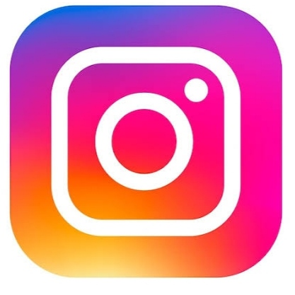

I'm passionate about cooking and love learning new things!
I have things I'm really good at - my strengths. These are like my superpowers, making me feel strong and confident. They help me face challenges and find solutions. But, just like everyone else, I also have things I'm working on - my weaknesses. These are areas where I can improve and grow. They teach me valuable lessons and show me where I need to focus. Understanding both my strengths and weaknesses helps me learn and become a better version of myself every day.
Family stands as my constant wellspring of inspiration. Their unwavering support, love, and shared experiences form the very foundation upon which I build my dreams. Their belief in my abilities fuels my aspirations, serving as a guiding light during challenging times. From their sacrifices to their encouragement, my family's presence inspires me to strive for greatness and reminds me of the values that shape my journey. In their embrace, I find the strength to pursue my passions and the courage to overcome obstacles, knowing that their support is an enduring source of inspiration in my life's narrative.
Being a flight attendant is my dream. I imagine myself traveling to different places, meeting new people, and experiencing diverse cultures. I love the idea of helping passengers and making their journey comfortable and enjoyable. The thought of being in the sky, exploring new destinations, and being part of a team that ensures everyone's safety and happiness excites me. I believe being a flight attendant will allow me to blend my passion for travel, helping others, and creating memorable experiences, making every flight a remarkable adventure for everyone onboard.
My best friend is like family to me. They're the person I can share everything with and who always has my back. We laugh together, cry together, and support each other no matter what. They understand me like no one else does. We have so many great memories together, from silly jokes to serious talks. They make my days brighter and my worries lighter. Having them in my life feels like having a forever friend who makes every moment special.
Life is a beautiful journey woven with threads of friendship, inspiration, strengths, and weaknesses. Embracing these aspects has shaped the colorful mosaic of my experiences. Each interaction, each challenge, and each moment has contributed to the tapestry of who I am today. I am grateful for the unwavering support of my friends and family, the inspiration that fuels my ambitions, the strengths that empower me, and the lessons from my weaknesses that drive me to improve. Thank you to everyone who has been a part of this incredible journey, contributing to the person I continue to become.
You can reach me at:
